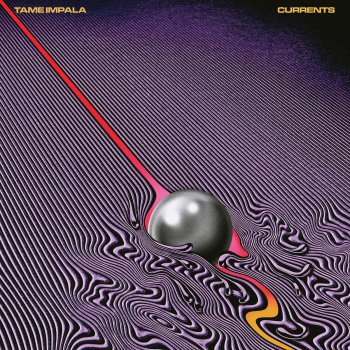

|  |
LetraLet It HappenTame Impala |
It's always around me, all this noise, but
Not nearly as loud as the voice saying
"Let it happen, let it happen
(It's gonna feel so good)
Just let it happen, let it happen"
All this running around
Trying to cover my shadow
A notion growing inside
Now all the others seem shallow
All this running around
Bearing down on my shoulders
I can hear an alarm
It must be morning
I heard about a whirlwind that's coming 'round
It's gonna carry off all that isn't bound, and
When it happens, when it happens
(I won't be holding on)
So let it happen, let it happen
All this running around
I can't fight it much longer
Something's tryin' to get out
And it's never been closer
If my take-off fails
Make up some other story
But if I never come back
Tell my mother I'm sorry
(Gibberish)
Baby, now I'm ready, moving on
Oh, but maybe I was ready all along
Oh, I'm ready for the moment and the sound
Oh, but maybe I was ready all along
Baby, now I'm ready, moving on
Oh, but maybe I was ready all along
Oh,
I'm ready for the moment and the sound
Oh, but maybe I was ready all along